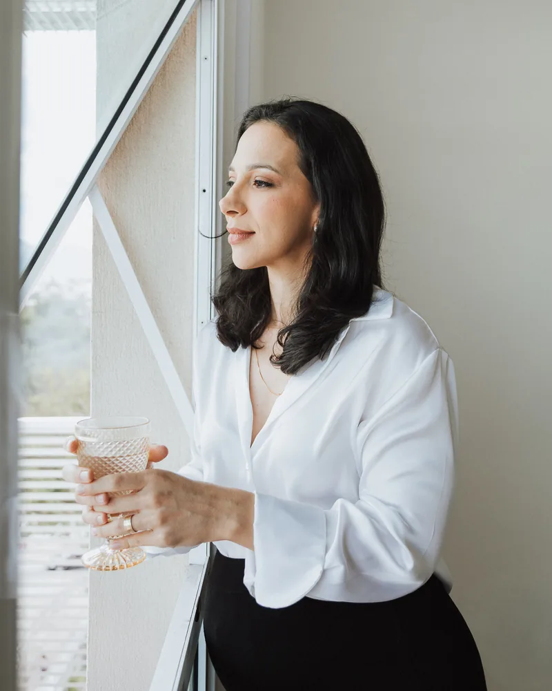

Gestação
Comer bem pelo bebê e por você.
Na minha experiência, a maioria começa a cuidar da alimentação quando descobre que está grávida. Faz todo sentido. Só não precisa ser no susto.
- Enjoo que não deixa nada parar no estômago
- Ferro que faz mal e a vontade de parar por conta própria
- Açúcar, glicemia e diabetes gestacional no radar
Comer bem na gestação é cuidar de você para cuidar do bebê.
- Começar de graçaaula Ferro Sem Sofrimento
- Plano feito para o seu trimestreconhecer a Avaliação da Fase